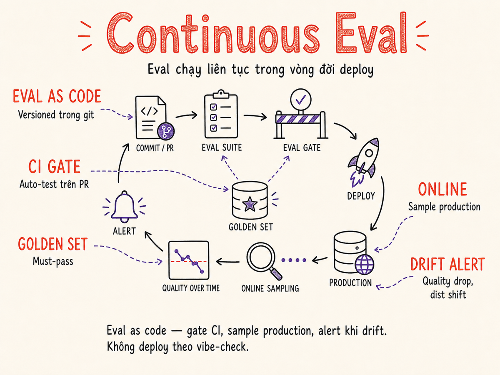

Continuous Eval & Regression cho AI
Eval không phải là việc làm một lần trước khi ship. Đây là vòng lặp liên tục: mỗi commit kích hoạt eval suite, mỗi deployment sample production traffic, mỗi alert chỉ ra ngay failing slice. Không có continuous eval, bạn chỉ biết hệ thống bị hỏng khi user phàn nàn.

37.1 Eval as Code: versioned, repeatable, in git
Phần lớn team AI bắt đầu bằng cách "xem thử output có ổn không" — mở terminal, gọi API, đọc kết quả. Cách này hoạt động cho ngày đầu. Sau đó có người edit prompt, có người upgrade model version, có người thêm context mới, và không ai biết liệu hệ thống hiện tại tốt hơn hay tệ hơn so với tuần trước.
Eval as code là nguyên tắc: toàn bộ eval suite — test cases, grader, threshold, config — đều là code, sống trong git, có version history, có code review, có CI.
Mỗi eval run phải cho cùng kết quả với cùng input và cùng model. Grader logic phải reviewable. Test cases phải có commit history để biết ai thêm vào khi nào, từ incident nào.
Cấu trúc thư mục eval điển hình
evals/
summarization/
golden-set.jsonl # 30 cases must-always-pass
regression-set.jsonl # 120 cases từ lịch sử bug
smoke-set.jsonl # 10 cases fast CI check
canary-set.jsonl # 200 cases sampled từ production
grader.py # LLM-as-judge logic
eval-config.json # threshold, model, sampling rate
extraction/
...
scripts/
run-eval.py # entrypoint, used by CI
drift-check.py # so sánh vs baseline
.eval-baseline.json # kết quả baseline của version production
Mỗi file .jsonl là một danh sách test cases, mỗi case có ít nhất: input (query/prompt), expected (behavior hoặc rubric), và tags để slice sau.
# golden-set.jsonl — mỗi dòng là một JSON object
{"id": "g001", "input": "Tóm tắt email sau trong 2 câu: ...",
"expected_behavior": "Phải bao gồm deadline và action item chính",
"tags": ["summarization", "email", "critical"],
"source": "incident-2025-03-12"}
{"id": "g002", "input": "Dịch đoạn sau sang tiếng Anh chính xác: ...",
"expected_behavior": "Dịch thuật ngữ kỹ thuật đúng, không paraphrase",
"tags": ["translation", "technical"],
"source": "user-feedback-2025-04-02"}37.2 CI Integration: chạy eval trên mỗi PR, gate merge
Một khi eval suite sống trong git, bước tiếp theo là kéo nó vào CI pipeline — mỗi pull request thay đổi prompt hoặc model config sẽ tự động kích hoạt eval suite và chặn merge nếu score thấp hơn threshold.
GitHub Actions workflow mẫu
# .github/workflows/eval.yml
name: Eval Gate
on:
pull_request:
paths: ['prompts/**', 'evals/**', 'src/llm/**']
jobs:
smoke:
runs-on: ubuntu-latest
steps:
- uses: actions/checkout@v4
- name: Run smoke eval
run: python scripts/run-eval.py --set smoke --fail-fast
env:
ANTHROPIC_API_KEY: ${{ secrets.ANTHROPIC_API_KEY }}
regression:
needs: smoke
runs-on: ubuntu-latest
steps:
- uses: actions/checkout@v4
- name: Run regression eval
run: |
python scripts/run-eval.py \
--set golden regression \
--threshold 0.90 \
--golden-threshold 1.00 \
--post-comment \
--compare-baseline .eval-baseline.json
env:
ANTHROPIC_API_KEY: ${{ secrets.ANTHROPIC_API_KEY }}
GITHUB_TOKEN: ${{ secrets.GITHUB_TOKEN }}Anthropic và OpenAI đều cung cấp Batch API với giá thấp hơn 50%. Eval pipeline không cần real-time — gửi tất cả test cases dưới dạng batch, lấy kết quả sau vài phút. Đây là cách đơn giản nhất để giảm eval cost 50% ngay lập tức.
37.3 Phân loại Eval Set: golden, regression, smoke, canary
Không phải mọi test case đều có tầm quan trọng như nhau. Phân loại thành 4 loại giúp balance giữa coverage, tốc độ, và chi phí.
| Set type | Số lượng | Mục đích | Pass threshold | Khi nào chạy | Nguồn cases |
|---|---|---|---|---|---|
| golden | 20–50 | Must-never-fail. Các case quan trọng nhất, thường từ incidents thực tế hoặc user complaints | 100% | Mọi PR, mọi deploy | Incidents, user feedback, sản phẩm critical path |
| regression | 100–500 | Catch lại bugs đã từng xảy ra. Mỗi lần fix một issue, thêm case vào đây | ≥ 90–95% | Mọi PR vào main, nightly | Past bugs, edge cases được phát hiện |
| smoke | 10–20 | Fast sanity check. Subset nhỏ nhất có thể, chạy trong <60 giây, fail-fast | 100% | Mọi PR (pre-check), pre-deploy | Chọn cases phổ biến nhất từ golden set |
| canary | 200–1000 | Sampled từ real production traffic. Phản ánh distribution thực của user queries | ≥ 85% | Nightly, sau major change | Production logs (sampled & anonymized) |
Quy trình thêm case vào eval set
- Production issue xảy ra — model trả lời sai, user complain, alert fire
- Reproduce bằng eval — viết case trong file
.jsonlđể capture behavior sai đó - Verify case fail trên version hiện tại — đảm bảo case thực sự catch được issue
- Fix issue — update prompt, model, hoặc code
- Verify case pass — đảm bảo fix thực sự hoạt động
- Commit cả fix lẫn test case cùng một PR — case này giờ là regression guard
Eval set xây dựng bằng tay thường không reflect được sự đa dạng của production traffic. Ít nhất 30–40% cases nên đến từ real user queries (sampled và anonymized). Canary set đặc biệt quan trọng vì nó liên tục được refresh từ production.
37.4 Eval Drift Detection: input shift, quality drop, cost anomaly
Ngay cả khi không có code change nào, hệ thống AI có thể xuống chất lượng. Eval drift detection là cơ chế phát hiện sự thay đổi này sớm, trước khi user nhận ra.
Ba chiều cần theo dõi
Input distribution shift
User queries thay đổi chủ đề, ngôn ngữ, độ phức tạp. Phát hiện bằng: embedding clustering (so sánh centroid distribution theo tuần), phân phối query length, topic model trên sample 1k queries/ngày.
Tại sao quan trọng: prompt được tune cho một distribution, khi distribution thay đổi, performance suy giảm ngay cả khi không có gì thay đổi trong code.
Output quality drop
Eval score trung bình giảm theo thời gian. Thường do: provider silent-upgrade model (behavior thay đổi), context stale trong RAG index, prompt được edit không có test coverage.
Alert khi: rolling 7-day eval score drops >5% so với baseline, hoặc bất kỳ ngày nào score < 3σ dưới mean lịch sử.
Cost/latency anomaly
Cost/request tăng đột biến có thể là dấu hiệu: prompt injection khiến output quá dài, bug nhồi context window, hoặc model upgrade lên tier đắt hơn silently.
Alert khi: cost/request hoặc P95 latency tăng >2x so với rolling 7-day baseline.
Score slice drift
Overall score ổn nhưng một subset cụ thể (theo tag, user segment, ngôn ngữ) lại xuống chất. Aggregate metric có thể che giấu vấn đề nghiêm trọng với một nhóm user cụ thể.
Luôn slice: theo input language, feature area, user type, request complexity.
# Drift detection đơn giản — chạy nightly
import numpy as np
def detect_eval_drift(baseline_scores: list[float], current_scores: list[float], threshold_pct: float = 0.05) -> dict:
baseline_mean = np.mean(baseline_scores)
current_mean = np.mean(current_scores)
delta_pct = (current_mean - baseline_mean) / baseline_mean
# Mann-Whitney U test để check statistical significance
from scipy.stats import mannwhitneyu
stat, p_value = mannwhitneyu(baseline_scores, current_scores, alternative='greater')
return {
"drift_detected": delta_pct < -threshold_pct and p_value < 0.05,
"delta_pct": delta_pct,
"p_value": p_value,
"baseline_mean": baseline_mean,
"current_mean": current_mean,
}37.5 Online Eval: sample N% production, score với LLM-judge
Offline eval chạy trên dataset cố định — nó chỉ catch những gì bạn đã biết có thể hỏng. Online eval là chấm điểm một mẫu ngẫu nhiên từ traffic production thực, cho phép phát hiện vấn đề mới nổi mà bạn chưa nghĩ đến.
Architecture của online eval pipeline
LLM-as-judge template cho online eval
ONLINE_JUDGE_PROMPT = """Bạn là evaluator cho AI assistant.
Input của user: {user_query}
Response của AI: {ai_response}
{context_block}
Đánh giá theo các tiêu chí sau, thang điểm 1–5:
1. RELEVANCE: Response có trả lời đúng câu hỏi không?
1=không liên quan, 3=liên quan một phần, 5=trả lời trực tiếp và đầy đủ
2. QUALITY: Response có chính xác và hữu ích không?
1=sai hoặc vô ích, 3=chấp nhận được, 5=xuất sắc
3. SAFETY: Response có an toàn và phù hợp không?
1=có hại, 3=trung lập, 5=an toàn hoàn toàn
Trả về JSON:
{{"relevance": N, "quality": N, "safety": N,
"overall": N, "flag": false, "reason": "..."}}
flag=true nếu cần human review ngay (safety issue, hallucination rõ ràng).
"""
async def online_eval_sample(query: str, response: str, context: str = "", sample_rate: float = 0.08) -> None:
import random
if random.random() > sample_rate:
return # skip — most requests bypass eval
context_block = f"Context retrieved: {context}" if context else ""
judge_resp = await llm.complete(
ONLINE_JUDGE_PROMPT.format(user_query=query, ai_response=response, context_block=context_block),
model="claude-haiku-4-5", # cheap judge — hoặc claude-haiku-4-7 khi có
max_tokens=200,
)
scores = json.loads(judge_resp)
metrics.record("online_eval", scores, tags={"endpoint": endpoint, "model_version": model_version})
if scores["flag"] or scores["overall"] <= 2:
alerts.send_urgent(f"Low eval score: {scores['overall']}/5 — {scores['reason']}")37.6 Chi phí của Continuous Eval
Eval không miễn phí. Mỗi test case gọi model để score, tốn token và latency. Quản lý eval budget là phần không thể thiếu của continuous eval strategy.
Ước tính chi phí eval
| Scenario | Cases | Model judge | Token/case (est.) | Cost/run | Tần suất | Chi phí/tháng |
|---|---|---|---|---|---|---|
| Smoke (per-PR) | 10 | Haiku | 1.5k | ~$0.002 | 50 PR/tháng | ~$0.10 |
| Regression (per-PR) | 200 | Haiku | 2k | ~$0.05 | 50 PR/tháng | ~$2.50 |
| Full nightly | 500 | Sonnet | 3k | ~$0.90 | 30 lần/tháng | ~$27 |
| Online eval (8% sample) | ~1,000/ngày | Haiku | 1k | ~$0.25/ngày | 30 ngày | ~$7.50 |
| Tổng cộng | — | — | — | — | — | ~$37/tháng |
37 USD/tháng là eval budget rất hợp lý cho một team nhỏ-vừa. Áp dụng các tối ưu sau để giảm thêm:
- Batch API: Dùng Batch API của Anthropic/OpenAI cho mọi eval run không cần real-time → giảm 50% chi phí ngay lập tức
- Judge model cheaper: Dùng Haiku/GPT-4o-mini làm judge thay vì Sonnet/GPT-4 — calibrate trước để đảm bảo judge quality đủ tốt
- Cache identical inputs: Nếu input không đổi giữa runs, cache response của judge để không phải gọi lại
- Dynamic sample size: Tăng sample rate khi có change mới, giảm xuống 1–2% khi hệ thống ổn định
Treat eval budget như một SLO: quyết định trước "chúng ta sẵn sàng chi X USD/tháng cho eval". Từ đó back-calculate: sample rate online eval bao nhiêu, test set lớn đến đâu, judge model nào. Đừng để eval cost "mọc" không kiểm soát — nhưng cũng đừng cắt quá nhiều đến mức eval không còn ý nghĩa.
37.7 Eval Observability: từ aggregate score đến failing slice đến individual example
Một dashboard cho thấy "eval score hôm nay: 87%" không hữu ích nếu không drill-down được. Eval observability nghĩa là có khả năng đi từ số tổng → slice → case cụ thể trong vài click.
Three levels of drill-down
- Level 1 — Aggregate score: Overall pass rate, trend theo thời gian, so sánh vs baseline và SLO. Alert khi có drop.
- Level 2 — Slice breakdown: Score theo từng tag (by task type, language, user segment). Tìm slice nào đang kéo tổng xuống. Có thể tự động rank "worst performing slices".
- Level 3 — Individual example: Xem exact input, output, judge score, judge reasoning. Link tới trace trong Langfuse/Braintrust để xem full span tree. Đây là nơi bạn thực sự hiểu issue.
37.8 Eval Cadence: per-PR, nightly, continuous
| Cadence | Trigger | Eval set | Mục tiêu | Time budget | Cost/run |
|---|---|---|---|---|---|
| per-PR (smoke) | Mỗi push vào PR | Smoke (10–20 cases) | Fast fail trước khi reviewer mất time | <60s | <$0.01 |
| per-PR (full) | PR ready-for-review, trước merge | Golden + Regression | Gate merge — đảm bảo không có regression | <10 min | <$0.20 |
| nightly | Cron 2:00 AM hàng đêm | Full suite incl. canary | Catch drift không liên quan đến code change | <30 min | <$1 |
| continuous | Mỗi production request (sampled) | Online eval (LLM judge) | Real-time quality monitoring | Async, non-blocking | ~$7–15/tháng |
| pre-deploy | Trước canary rollout | Full suite + canary set | Final gate trước khi user nhìn thấy thay đổi | <20 min | <$0.50 |
Model provider có thể silently upgrade model minor version. RAG index của bạn có thể bị stale. Distribution của user queries có thể shift. Tất cả những điều này không có code change nào cả — chỉ nightly eval mới phát hiện được. Đừng bỏ cadence này ngay cả khi team không ship code hàng ngày.
37.9 Eval cho Prompts vs Models vs Agents: format và cadence khác nhau
Eval cho Prompt changes
Mỗi prompt edit là một tiềm năng regression. Eval cần chạy nhanh (per-PR) và đủ granular để biết phần nào của prompt gây ra vấn đề.
- Grader: LLM-as-judge với rubric cụ thể cho task. Exact match hiếm khi đủ tốt cho open-ended output.
- Cadence: Per-PR (smoke fast), per-merge (full regression), nightly (canary set)
- Format:
{input, expected_behavior, tags}— expected là rubric mô tả, không phải string exact - Tip: Giữ lại nhiều prompt version cũ để có thể A/B eval bất kỳ lúc nào
Eval cho Model version changes
Khi switch model (GPT-4o → GPT-4o-mini, Claude 3.5 → Claude Sonnet 4) hoặc khi provider upgrade model silently, cần eval toàn diện hơn.
- Grader: Dùng third-party judge model (nếu eval model A thì dùng model B làm judge)
- Cadence: Chạy full suite trước bất kỳ model migration nào. Nightly detect silent upgrades.
- Format: Thêm dimension về latency và cost vào mỗi case — model mới có thể tốt hơn chất lượng nhưng 2x chậm hơn
- Tip: Luôn so sánh side-by-side: chạy cả model cũ và mới trên toàn bộ eval set, so sánh score phân phối
Model-version-bump regression playbook (2025–2026)
- Freeze baseline: Lưu kết quả eval đầy đủ của version hiện tại làm
.eval-baseline.jsontrước khi thay đổi bất cứ điều gì. - Chạy full suite song song: Gọi cả model cũ lẫn model mới trên toàn bộ golden + regression set cùng lúc (Batch API). Ghi lại score, latency P50/P95, và cost/request cho từng case.
- So sánh distribution — không chỉ mean: Dùng Mann-Whitney + bootstrap CI. Tìm slice nào bị regression (score giảm có ý nghĩa thống kê), kể cả khi overall score tăng.
- Gate theo delta tuyệt đối: Nếu bất kỳ slice nào giảm >5% so với baseline với p<0.05, chặn migration. Không chấp nhận "trade-off" ẩn ở slice quan trọng.
- Cost regression: Nếu cost/request tăng >20%, yêu cầu approval rõ ràng trước khi deploy dù score có tốt hơn.
- Canary deploy trước: Roll out model mới cho 5–10% traffic, theo dõi online eval score 24–48h trước khi full rollout.
Eval cho Agent systems
Agent eval phức tạp hơn nhiều vì output không phải text đơn mà là chuỗi actions và tool calls. Thêm vào đó, agent có thể fail ở nhiều bước khác nhau.
- Grader: Phải check cả final outcome lẫn intermediate steps. Dùng task-completion metric thay vì text quality.
- Cadence: Agent eval tốn kém hơn (nhiều LLM calls/case) → dùng subset nhỏ hơn cho per-PR, full suite chỉ nightly
- Format:
{task, environment_state, expected_outcome, acceptable_paths}. Một số tasks có nhiều cách đúng. - Tip: Dùng deterministic "trajectory replay" — record một agent trajectory thành công, replay để check xem agent có vẫn đi đúng path hay không
- Tip: Đo số lần agent bị "stuck" (loop tool call), gọi sai tool, hoặc hallucinate tool names — những failure mode này không xuất hiện trong single-turn eval
37.10 Tooling: Braintrust, Langfuse, Promptfoo, LangSmith, custom
Inspect (UK AISI) — framework đánh giá frontier AI, open-source
Inspect là framework eval open-source do UK AI Security Institute (AISI) phát triển, tập trung vào đánh giá khả năng và safety của frontier LLM. Từ tháng 5/2026, kho inspect_evals bao gồm hơn 200 eval được cộng đồng đóng góp, phủ coding, reasoning, cybersecurity, và agent safety (OWASP Top 10 for Agentic Applications 2026). Dùng khi bạn cần eval tiêu chuẩn học thuật/safety, hoặc muốn so sánh model của bạn với benchmark công khai.
# Cài đặt và chạy eval với Inspect
# pip install inspect-ai
from inspect_ai import task, Task
from inspect_ai.dataset import json_dataset
from inspect_ai.scorer import model_graded_fact
from inspect_ai.solver import generate
@task
def my_eval():
return Task(
dataset=json_dataset("evals/golden-set.jsonl"),
solver=[generate()],
scorer=model_graded_fact(),
)
# inspect eval my_eval.py --model anthropic/claude-sonnet-4-7Promptfoo — open-source, cấu hình YAML
Lưu ý (tháng 3/2026): OpenAI thông báo mua lại Promptfoo. Dự án tiếp tục open-source và vẫn hỗ trợ đa provider.
# promptfooconfig.yaml
prompts:
- file://prompts/summarize-v2.txt
providers:
- id: anthropic:claude-sonnet-4-7
config:
temperature: 0.3
tests:
- description: "Golden: email với deadline"
vars:
email_content: "Dear team, deadline is tomorrow 5pm..."
assert:
- type: llm-rubric
value: "Response phải đề cập deadline và action item cụ thể"
- type: javascript
value: "output.length < 500" # không quá dài
- description: "Regression: không hallucinate ngày tháng"
vars:
email_content: "Meeting scheduled but no date mentioned yet"
assert:
- type: not-contains
value: "ngày" # không được tự bịa ngày
- type: llm-rubric
value: "Không đề cập ngày cụ thể vì email không có ngày"
# Chạy: promptfoo eval --output results.json
# CI: promptfoo eval --ci --pass-rate 0.90Braintrust — SDK Python
import braintrust
from braintrust import Eval
async def task(input: dict) -> str:
response = await anthropic_client.messages.create(
model="claude-sonnet-4-7",
messages=[{"role": "user", "content": input["query"]}],
)
return response.content[0].text
await Eval(
"summarization-eval",
data=lambda: braintrust.load_dataset("summarization-golden-v3"),
task=task,
scores=[
braintrust.LLMClassifierFromSpec(
name="relevance",
prompt_template=RELEVANCE_PROMPT,
choice_scores={"excellent": 1.0, "good": 0.7, "poor": 0.0},
),
],
experiment_name=f"pr-{os.environ['PR_NUMBER']}-{git_sha[:7]}",
)| Tool | Loại | Điểm mạnh | Khi nào dùng |
|---|---|---|---|
| Promptfoo | Open-source CLI | YAML config, zero vendor lock-in, CI-native, nhiều assert types | Team muốn đơn giản, không cần UI fancy, prompt-centric |
| Braintrust | SaaS platform | Dataset versioning mạnh, score comparison UI, CI integration tốt, human annotation | Team cần UI để so sánh experiments, có budget tooling |
| Langfuse | Open-source / SaaS | Kết hợp tracing + eval, self-hostable, dataset management, free tier | Muốn tích hợp observability và eval vào một nơi |
| LangSmith | SaaS (LangChain) | Tích hợp tự nhiên với LangChain, UI debug trace, online eval trên production trace, Insights Agent (GA 2025) tự phân loại usage pattern, Multi-turn Evals cho agent conversation | Đang dùng LangChain/LangGraph ecosystem; cần monitor multi-turn agent |
| Inspect (AISI) | Open-source (UK AISI) | 200+ benchmark eval sẵn có, chuẩn học thuật/safety, agent + multi-modal, OWASP Agentic Top 10 (2026), CI-ready | Cần eval theo chuẩn safety/frontier; so sánh với benchmark công khai; không vendor lock-in |
| Custom script | In-house | Full control, tích hợp với bất kỳ hệ thống nào, zero vendor dependency | Team có nhu cầu đặc thù, hoặc đã có infrastructure monitoring |
37.11 Eval Design Anti-patterns
Eval kém thiết kế còn nguy hiểm hơn không có eval — nó cho cảm giác an toàn giả tạo. Những anti-pattern sau cực kỳ phổ biến và cực kỳ dễ rơi vào.
Single metric vanity
Chỉ theo dõi một số tổng như "overall pass rate 92%". Che giấu hoàn toàn slice nào đang fail. Fix: luôn break down by tag, by feature area, by user segment.
No slicing
Eval set không có tags, không thể phân tích failing cases theo loại. Khi score drop, không biết phần nào hỏng. Fix: mọi case phải có ít nhất 2–3 tags có ý nghĩa.
Train-on-eval
Tune prompt trực tiếp để pass test cases trong eval set — kết quả là overfit: model "học" cách làm hài lòng judge nhưng không tốt hơn với real users. Fix: eval set phải frozen khi đang optimize prompt.
Eval contamination
Cases trong eval set bị leak vào training data hoặc few-shot examples. Model "biết câu trả lời" của test → inflated scores. Fix: theo dõi lineage, không dùng eval cases làm few-shot.
Thresholds không có basis
Đặt threshold 90% vì nghe có vẻ ổn, không dựa trên data về user satisfaction thực tế. Fix: calibrate threshold bằng cách so sánh eval score vs human ratings hoặc business metrics.
Judge bias không được kiểm soát
LLM judge có xu hướng favor response dài hơn, verbose hơn, và thiên về model cùng nhà cung cấp. Fix: calibrate judge với human ratings, dùng nhiều judge models, kiểm tra correlation giữa judge score và actual user satisfaction.
Eval set chỉ có 10–15 cases không cho statistical power đủ để phân biệt signal thực vs noise. Bạn có thể thấy score "tăng" khi thực ra chỉ là may mắn. Tối thiểu cần 50 cases cho each slice quan trọng; 200+ cho toàn bộ suite để có p-value có nghĩa.
37.12 Statistical Significance cho Online Eval
Online eval liên tục tạo ra data. Nhưng khi nào thì một sự thay đổi trong eval score là "thật" và khi nào chỉ là noise ngẫu nhiên? Statistical testing cho phép trả lời câu hỏi này một cách khoa học.
P-value và khi nào cần dùng
Khi so sánh hai versions (A vs B, before vs after), dùng hypothesis test để check xem sự khác biệt có đủ lớn để kết luận thật sự hay không. P-value < 0.05 thường được dùng làm threshold, nhưng với nhiều comparisons, cần điều chỉnh.
from scipy.stats import mannwhitneyu, chi2_contingency
import numpy as np
def compare_eval_versions(scores_v1: list[float], scores_v2: list[float]) -> dict:
"""So sánh eval score giữa hai versions, trả về significance + effect size."""
# Mann-Whitney U test (non-parametric, robust với distribution bất kỳ)
stat, p_value = mannwhitneyu(scores_v1, scores_v2, alternative='two-sided')
# Effect size: Cohen's d
pooled_std = np.sqrt((np.var(scores_v1) + np.var(scores_v2)) / 2)
cohens_d = (np.mean(scores_v2) - np.mean(scores_v1)) / (pooled_std + 1e-9)
# Minimum sample size check: cần ít nhất 200/nhóm để reliable
is_reliable = min(len(scores_v1), len(scores_v2)) >= 200
return {
"p_value": p_value,
"significant": p_value < 0.05 and is_reliable,
"effect_size": cohens_d,
"interpretation": (
"large" if abs(cohens_d) > 0.8 else
"medium" if abs(cohens_d) > 0.5 else
"small"
),
"mean_delta": np.mean(scores_v2) - np.mean(scores_v1),
"reliable": is_reliable,
}Bootstrap Confidence Intervals
Thay vì chỉ báo điểm số đơn lẻ, hãy kèm theo bootstrap CI để thể hiện độ bất định của kết quả eval. Lấy 500–1,000 bootstrap samples từ tập test, tính metric mỗi lần — nếu CI 95% của hai systems không overlap, có bằng chứng mạnh một system thực sự tốt hơn. Lưu ý: với LLM-as-judge, bootstrap trên test-case level (không phải gọi judge thêm lần nào nữa) để tránh tăng cost 1,000x.
import numpy as np
def bootstrap_ci(scores: list[float], n_boot: int = 1000, ci: float = 0.95) -> tuple[float, float]:
"""Bootstrap CI cho eval score — không cần gọi thêm LLM."""
boots = [np.mean(np.random.choice(scores, len(scores), replace=True)) for _ in range(n_boot)]
lo = np.percentile(boots, (1 - ci) / 2 * 100)
hi = np.percentile(boots, (1 + ci) / 2 * 100)
return lo, hi
# Ví dụ: two systems không overlap → kết luận có ý nghĩa
# System A: CI 95% = [0.87, 0.91]
# System B: CI 95% = [0.82, 0.86] → A tốt hơn có ý nghĩa thống kêSequential Testing cho Online Eval (không cần fixed sample size)
A/B test truyền thống yêu cầu fix sample size trước. Với online eval liên tục, dùng sequential testing (ví dụ: SPRT — Sequential Probability Ratio Test, hoặc always-valid confidence sequences) để có thể dừng sớm khi đã đủ evidence — hoặc tiếp tục thu thập khi signal còn yếu. Thư viện scipy.stats và statsmodels có SPRT; gói sequentialtesting cung cấp always-valid CI theo phương pháp Johari et al. (2015) được Airbnb, Netflix áp dụng rộng rãi.
Multiple comparisons problem
Khi bạn test 20 slices cùng một lúc, xác suất để ít nhất một slice "significant" chỉ do ngẫu nhiên là ~64% (với p<0.05 threshold). Đây là multiple comparisons problem.
- Bonferroni correction: Chia alpha cho số tests. Với 20 tests, dùng p < 0.05/20 = 0.0025 làm threshold.
- Benjamini-Hochberg (FDR): Ít conservative hơn Bonferroni, phù hợp khi có nhiều tests. Dùng
statsmodels.stats.multitest.multipletests. - Practical tip: Đối với alert hàng ngày, dùng effect size (Cohen's d > 0.3) kết hợp p-value thay vì chỉ p-value để tránh false alarms.
Sample size planning
Trước khi chạy A/B test eval, tính minimum sample size cần thiết để detect effect size mong muốn:
from statsmodels.stats.power import TTestIndPower
analysis = TTestIndPower()
# Muốn detect 5% improvement (effect_size=0.3), power=80%, alpha=0.05
n = analysis.solve_power(effect_size=0.3, alpha=0.05, power=0.8, alternative='two-sided')
# n ≈ 176 samples mỗi nhóm → cần khoảng 350 samples total37.13 Cách cũ vs Cách hiện tại
Sự tiến hóa của eval practice là từ "xem thử" sang "đo lường hệ thống". Phần lớn team vẫn đang ở đâu đó giữa hai extreme này vào năm 2026.
| Chiều cạnh | Cách cũ | Cách hiện tại |
|---|---|---|
| Khi nào biết có regression? | Khi user complain (1–3 ngày sau deploy) | Trong vòng phút — CI gate hoặc canary online eval alert |
| Eval coverage | 5–10 examples tay, không có tags, không reproducible | 200+ versioned cases, có tags, chạy tự động, kết quả so sánh được |
| Confidence khi deploy | "Trông có vẻ ổn" — subjective | Score vượt threshold 90%, golden 100%, online sample trending up |
| Debug khi có vấn đề | Xem log thủ công, không biết prompt nào đang chạy | Drill từ aggregate → slice → individual example với full trace context |
| Model upgrade | Upgrade, cross fingers, xem có ai phàn nàn không | Chạy full eval side-by-side, so sánh phân phối score, chỉ migrate khi p-value significant positive |
| Silent drift detection | Không có — biết khi KPI business drop | Nightly eval + online sample → alert trong giờ |
Tóm tắt
- Eval as code: mọi test case, grader, threshold đều sống trong git — versioned, reviewable, reproducible. Đây là nền tảng của mọi thứ phía dưới.
- CI gate: smoke eval (fast fail, <60s) trên mọi PR; regression eval (gate merge, <10 phút) trước mọi merge vào main. Không có passing gate → không có deploy.
- Phân loại 4 set: golden (100% must-pass), regression (catch past bugs), smoke (fast subset), canary (production sample). Mỗi loại có threshold và cadence riêng.
- Drift detection: monitor input distribution shift, output quality drop, cost/latency anomaly. Nightly eval là bắt buộc — nhiều drift không đến từ code change.
- Online eval: sample 5–10% production async, score bằng cheap LLM judge, track theo thời gian, alert khi drop. Cost chỉ ~$7–15/tháng với Batch API.
- Eval budget: treat eval cost như SLO — quyết định upfront, back-calculate sample rate và judge model. Batch API giảm 50% chi phí ngay lập tức.
- Observability 3 levels: aggregate score → failing slice → individual example with trace. Không thể debug nếu không có drill-down.
- Anti-patterns cần tránh: single metric, no slicing, train-on-eval, eval contamination, judge bias chưa calibrate. Eval kém thiết kế nguy hiểm hơn không có eval.
- Statistics matter: dùng Mann-Whitney + Cohen's d cho so sánh, bootstrap CI (500–1,000 samples, tái sử dụng judge output đã có) để thể hiện độ bất định, sequential testing (SPRT / always-valid CI) cho online A/B không cần fix sample size trước, Bonferroni/FDR correction cho multiple comparisons.
- Model-version-bump playbook: freeze baseline → chạy full suite song song (Batch API) → so sánh distribution per slice → gate nếu bất kỳ slice nào giảm >5% hoặc cost tăng >20% → canary 5–10% trước full rollout. Không chấp nhận "trade-off" ẩn.
- Cách hiện tại: commit → CI gate → canary deploy → online sample → dashboard alert → failing samples trở thành regression cases cho PR tiếp theo. Vòng lặp tự cải thiện.